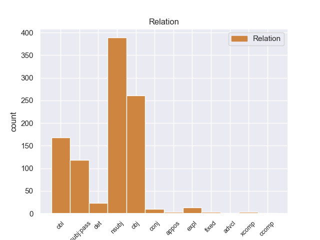
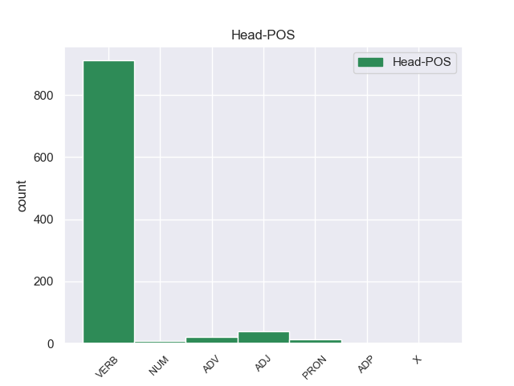
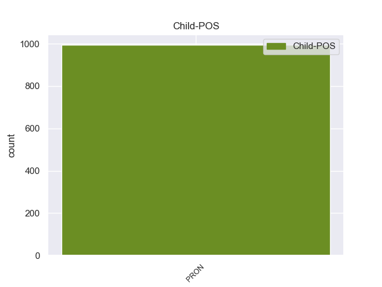

Distribution of features within this leaf



Morphosyntax Rules sorted by frequency.
- When the dependent token is the nominal subject(nsubj) of the head token, and the head token is VERB and the dependent token is PRON, the Gender needs to be Neut.
1 Αυτό αυτός PRON PRON Case=Nom|Gender=Neut|Number=Sing|Person=3|PronType=Dem 2 nsubj _ _
2 μπορεί μπορώ VERB VERB Aspect=Imp|Mood=Ind|Number=Sing|Person=3|Tense=Pres|VerbForm=Fin|Voice=Act 0 _ _ _
3 να _ _ _ _ 0 _ _ _
4 μην _ _ _ _ 0 _ _ _
5 οδηγήσει _ _ _ _ 0 _ _ _
6 σ _ _ _ _ 0 _ _ _
7 τη _ _ _ _ 0 _ _ _
8 λήξη _ _ _ _ 0 _ _ _
9 του _ _ _ _ 0 _ _ _
10 εν _ _ _ _ 0 _ _ _
11 λόγω _ _ _ _ 0 _ _ _
12 ζητήματος _ _ _ _ 0 _ _ _
13 αλλά _ _ _ _ 0 _ _ _
14 , _ _ _ _ 0 _ _ _
15 σ _ _ _ _ 0 _ _ _
16 τη _ _ _ _ 0 _ _ _
17 μορφή _ _ _ _ 0 _ _ _
18 υπό _ _ _ _ 0 _ _ _
19 την _ _ _ _ 0 _ _ _
20 οποία _ _ _ _ 0 _ _ _
21 την _ _ _ _ 0 _ _ _
22 λάβαμε _ _ _ _ 0 _ _ _
23 , _ _ _ _ 0 _ _ _
24 αυτή _ _ _ _ 0 _ _ _
25 η _ _ _ _ 0 _ _ _
26 αίτηση _ _ _ _ 0 _ _ _
27 άρσης _ _ _ _ 0 _ _ _
28 της _ _ _ _ 0 _ _ _
29 ασυλίας _ _ _ _ 0 _ _ _
30 ήταν _ _ _ _ 0 _ _ _
31 , _ _ _ _ 0 _ _ _
32 κατά _ _ _ _ 0 _ _ _
33 την _ _ _ _ 0 _ _ _
34 άποψη _ _ _ _ 0 _ _ _
35 της _ _ _ _ 0 _ _ _
36 Επιτροπής _ _ _ _ 0 _ _ _
37 Νομικών _ _ _ _ 0 _ _ _
38 Θεμάτων _ _ _ _ 0 _ _ _
39 , _ _ _ _ 0 _ _ _
40 απαράδεκτη _ _ _ _ 0 _ _ _
41 , _ _ _ _ 0 _ _ _
42 άποψη _ _ _ _ 0 _ _ _
43 την _ _ _ _ 0 _ _ _
44 οποία _ _ _ _ 0 _ _ _
45 συνιστώ _ _ _ _ 0 _ _ _
46 σ _ _ _ _ 0 _ _ _
47 το _ _ _ _ 0 _ _ _
48 Σώμα _ _ _ _ 0 _ _ _
49 να _ _ _ _ 0 _ _ _
50 υιοθετήσει _ _ _ _ 0 _ _ _
51 . _ _ _ _ 0 _ _ _
1 πρόκειται _ _ _ _ 0 _ _ _
2 για _ _ _ _ 0 _ _ _
3 αυτό _ _ _ _ 0 _ _ _
4 το _ _ _ _ 0 _ _ _
5 οποίο οποίος PRON PRON Case=Acc|Gender=Neut|Number=Sing|Person=3|PronType=Rel 6 obj _ _
6 αποκαλύφθηκε αποκαλύπτω VERB VERB Aspect=Perf|Mood=Ind|Number=Sing|Person=3|Tense=Past|VerbForm=Fin|Voice=Pass 0 _ _ _
7 κατά _ _ _ _ 0 _ _ _
8 τη _ _ _ _ 0 _ _ _
9 διάρκεια _ _ _ _ 0 _ _ _
10 αυτής _ _ _ _ 0 _ _ _
11 της _ _ _ _ 0 _ _ _
12 διαδικασίας _ _ _ _ 0 _ _ _
13 , _ _ _ _ 0 _ _ _
14 ότι _ _ _ _ 0 _ _ _
15 ο _ _ _ _ 0 _ _ _
16 Εισαγγελέας _ _ _ _ 0 _ _ _
17 κάποια _ _ _ _ 0 _ _ _
18 στιγμή _ _ _ _ 0 _ _ _
19 ζήτησε _ _ _ _ 0 _ _ _
20 από _ _ _ _ 0 _ _ _
21 την _ _ _ _ 0 _ _ _
22 Πρόεδρο _ _ _ _ 0 _ _ _
23 του _ _ _ _ 0 _ _ _
24 Σώματος _ _ _ _ 0 _ _ _
25 , _ _ _ _ 0 _ _ _
26 την _ _ _ _ 0 _ _ _
27 προκάτοχό _ _ _ _ 0 _ _ _
28 σας _ _ _ _ 0 _ _ _
29 , _ _ _ _ 0 _ _ _
30 λεπτομέρειες _ _ _ _ 0 _ _ _
31 για _ _ _ _ 0 _ _ _
32 την _ _ _ _ 0 _ _ _
33 ψήφο _ _ _ _ 0 _ _ _
34 που _ _ _ _ 0 _ _ _
35 έχουν _ _ _ _ 0 _ _ _
36 δώσει _ _ _ _ 0 _ _ _
37 οι _ _ _ _ 0 _ _ _
38 δύο _ _ _ _ 0 _ _ _
39 συγκεκριμένοι _ _ _ _ 0 _ _ _
40 βουλευτές _ _ _ _ 0 _ _ _
41 προκειμένου _ _ _ _ 0 _ _ _
42 να _ _ _ _ 0 _ _ _
43 διευκρινιστεί _ _ _ _ 0 _ _ _
44 περαιτέρω _ _ _ _ 0 _ _ _
45 η _ _ _ _ 0 _ _ _
46 πιθανότητα _ _ _ _ 0 _ _ _
47 να _ _ _ _ 0 _ _ _
48 είχαν _ _ _ _ 0 _ _ _
49 ασκήσει _ _ _ _ 0 _ _ _
50 αθέμιτη _ _ _ _ 0 _ _ _
51 επιρροή _ _ _ _ 0 _ _ _
52 . _ _ _ _ 0 _ _ _
1 πρόκειται πρόκειται VERB VERB Aspect=Imp|Mood=Ind|Number=Sing|Person=3|Tense=Pres|VerbForm=Fin|Voice=Pass 0 _ _ _
2 για _ _ _ _ 0 _ _ _
3 αυτό αυτός PRON PRON Case=Acc|Gender=Neut|Number=Sing|Person=3|PronType=Dem 1 obl _ _
4 το _ _ _ _ 0 _ _ _
5 οποίο _ _ _ _ 0 _ _ _
6 αποκαλύφθηκε _ _ _ _ 0 _ _ _
7 κατά _ _ _ _ 0 _ _ _
8 τη _ _ _ _ 0 _ _ _
9 διάρκεια _ _ _ _ 0 _ _ _
10 αυτής _ _ _ _ 0 _ _ _
11 της _ _ _ _ 0 _ _ _
12 διαδικασίας _ _ _ _ 0 _ _ _
13 , _ _ _ _ 0 _ _ _
14 ότι _ _ _ _ 0 _ _ _
15 ο _ _ _ _ 0 _ _ _
16 Εισαγγελέας _ _ _ _ 0 _ _ _
17 κάποια _ _ _ _ 0 _ _ _
18 στιγμή _ _ _ _ 0 _ _ _
19 ζήτησε _ _ _ _ 0 _ _ _
20 από _ _ _ _ 0 _ _ _
21 την _ _ _ _ 0 _ _ _
22 Πρόεδρο _ _ _ _ 0 _ _ _
23 του _ _ _ _ 0 _ _ _
24 Σώματος _ _ _ _ 0 _ _ _
25 , _ _ _ _ 0 _ _ _
26 την _ _ _ _ 0 _ _ _
27 προκάτοχό _ _ _ _ 0 _ _ _
28 σας _ _ _ _ 0 _ _ _
29 , _ _ _ _ 0 _ _ _
30 λεπτομέρειες _ _ _ _ 0 _ _ _
31 για _ _ _ _ 0 _ _ _
32 την _ _ _ _ 0 _ _ _
33 ψήφο _ _ _ _ 0 _ _ _
34 που _ _ _ _ 0 _ _ _
35 έχουν _ _ _ _ 0 _ _ _
36 δώσει _ _ _ _ 0 _ _ _
37 οι _ _ _ _ 0 _ _ _
38 δύο _ _ _ _ 0 _ _ _
39 συγκεκριμένοι _ _ _ _ 0 _ _ _
40 βουλευτές _ _ _ _ 0 _ _ _
41 προκειμένου _ _ _ _ 0 _ _ _
42 να _ _ _ _ 0 _ _ _
43 διευκρινιστεί _ _ _ _ 0 _ _ _
44 περαιτέρω _ _ _ _ 0 _ _ _
45 η _ _ _ _ 0 _ _ _
46 πιθανότητα _ _ _ _ 0 _ _ _
47 να _ _ _ _ 0 _ _ _
48 είχαν _ _ _ _ 0 _ _ _
49 ασκήσει _ _ _ _ 0 _ _ _
50 αθέμιτη _ _ _ _ 0 _ _ _
51 επιρροή _ _ _ _ 0 _ _ _
52 . _ _ _ _ 0 _ _ _
1 από _ _ _ _ 0 _ _ _
2 τα _ _ _ _ 0 _ _ _
3 δε _ _ _ _ 0 _ _ _
4 έγγραφα _ _ _ _ 0 _ _ _
5 της _ _ _ _ 0 _ _ _
6 υπόθεσης _ _ _ _ 0 _ _ _
7 προκύπτει _ _ _ _ 0 _ _ _
8 ότι _ _ _ _ 0 _ _ _
9 δεν _ _ _ _ 0 _ _ _
10 φαίνεται _ _ _ _ 0 _ _ _
11 να _ _ _ _ 0 _ _ _
12 έχει _ _ _ _ 0 _ _ _
13 ληφθεί _ _ _ _ 0 _ _ _
14 υπόψη _ _ _ _ 0 _ _ _
15 η _ _ _ _ 0 _ _ _
16 σύσταση _ _ _ _ 0 _ _ _
17 να _ _ _ _ 0 _ _ _
18 διαβιβαστεί _ _ _ _ 0 _ _ _
19 η _ _ _ _ 0 _ _ _
20 αίτηση _ _ _ _ 0 _ _ _
21 άρσης _ _ _ _ 0 _ _ _
22 της _ _ _ _ 0 _ _ _
23 ασυλίας _ _ _ _ 0 _ _ _
24 μόνον _ _ _ _ 0 _ _ _
25 επί _ _ _ _ 0 _ _ _
26 τη _ _ _ _ 0 _ _ _
27 βάσει _ _ _ _ 0 _ _ _
28 ακριβέστερου _ _ _ _ 0 _ _ _
29 προσδιορισμού _ _ _ _ 0 _ _ _
30 όσον _ _ _ _ 0 _ _ _
31 αφορά _ _ _ _ 0 _ _ _
32 τους _ _ _ _ 0 _ _ _
33 τόπους _ _ _ _ 0 _ _ _
34 και _ _ _ _ 0 _ _ _
35 τα _ _ _ _ 0 _ _ _
36 πρόσωπα _ _ _ _ 0 _ _ _
37 που που PRON PRON Case=Nom|Gender=Neut|Number=Plur|Person=3|PronType=Rel 38 nsubj:pass _ _
38 εμπλέκονται εμπλέκω VERB VERB Aspect=Imp|Mood=Ind|Number=Plur|Person=3|Tense=Pres|VerbForm=Fin|Voice=Pass 0 _ _ _
39 σ _ _ _ _ 0 _ _ _
40 την _ _ _ _ 0 _ _ _
41 υπόθεση _ _ _ _ 0 _ _ _
42 . _ _ _ _ 0 _ _ _
1 Ωστόσο _ _ _ _ 0 _ _ _
2 , _ _ _ _ 0 _ _ _
3 κάτι κάτι PRON PRON Case=Nom|Gender=Neut|Number=Sing|Person=3|PronType=Ind 0 _ _ _
4 τέτοιο τέτοιος PRON PRON Case=Nom|Gender=Neut|Number=Sing|Person=3|PronType=Dem 3 det _ _
5 απαιτεί _ _ _ _ 0 _ _ _
6 ξεκάθαρες _ _ _ _ 0 _ _ _
7 ενδείξεις _ _ _ _ 0 _ _ _
8 από _ _ _ _ 0 _ _ _
9 πλευράς _ _ _ _ 0 _ _ _
10 Βόρειας _ _ _ _ 0 _ _ _
11 Κορέας _ _ _ _ 0 _ _ _
12 , _ _ _ _ 0 _ _ _
13 που _ _ _ _ 0 _ _ _
14 μέχρι _ _ _ _ 0 _ _ _
15 τώρα _ _ _ _ 0 _ _ _
16 δεν _ _ _ _ 0 _ _ _
17 έχουν _ _ _ _ 0 _ _ _
18 εμφανιστεί _ _ _ _ 0 _ _ _
19 . _ _ _ _ 0 _ _ _
1 Ο _ _ _ _ 0 _ _ _
2 τρόπος _ _ _ _ 0 _ _ _
3 με _ _ _ _ 0 _ _ _
4 τον _ _ _ _ 0 _ _ _
5 οποίο _ _ _ _ 0 _ _ _
6 εντάξατε _ _ _ _ 0 _ _ _
7 το _ _ _ _ 0 _ _ _
8 Προεδρείο _ _ _ _ 0 _ _ _
9 του _ _ _ _ 0 _ _ _
10 Κοινοβουλίου _ _ _ _ 0 _ _ _
11 , _ _ _ _ 0 _ _ _
12 τη _ _ _ _ 0 _ _ _
13 Διάσκεψη _ _ _ _ 0 _ _ _
14 των _ _ _ _ 0 _ _ _
15 Προέδρων _ _ _ _ 0 _ _ _
16 και _ _ _ _ 0 _ _ _
17 τους _ _ _ _ 0 _ _ _
18 προέδρους _ _ _ _ 0 _ _ _
19 των _ _ _ _ 0 _ _ _
20 επιτροπών _ _ _ _ 0 _ _ _
21 σ _ _ _ _ 0 _ _ _
22 την _ _ _ _ 0 _ _ _
23 ατζέντα _ _ _ _ 0 _ _ _
24 σας _ _ _ _ 0 _ _ _
25 , _ _ _ _ 0 _ _ _
26 ήδη _ _ _ _ 0 _ _ _
27 από _ _ _ _ 0 _ _ _
28 τον _ _ _ _ 0 _ _ _
29 πρώτο _ _ _ _ 0 _ _ _
30 μήνα _ _ _ _ 0 _ _ _
31 της _ _ _ _ 0 _ _ _
32 θητείας _ _ _ _ 0 _ _ _
33 σας _ _ _ _ 0 _ _ _
34 , _ _ _ _ 0 _ _ _
35 δείχνει _ _ _ _ 0 _ _ _
36 την _ _ _ _ 0 _ _ _
37 αποφασιστικότητά _ _ _ _ 0 _ _ _
38 σας _ _ _ _ 0 _ _ _
39 να _ _ _ _ 0 _ _ _
40 συνεργαστείτε _ _ _ _ 0 _ _ _
41 με _ _ _ _ 0 _ _ _
42 το _ _ _ _ 0 _ _ _
43 σύνολο _ _ _ _ 0 _ _ _
44 του _ _ _ _ 0 _ _ _
45 Σώματος _ _ _ _ 0 _ _ _
46 ώστε _ _ _ _ 0 _ _ _
47 να _ _ _ _ 0 _ _ _
48 επιτευχθεί _ _ _ _ 0 _ _ _
49 η _ _ _ _ 0 _ _ _
50 μεταρρύθμιση _ _ _ _ 0 _ _ _
51 , _ _ _ _ 0 _ _ _
52 και _ _ _ _ 0 _ _ _
53 αυτό αυτός PRON PRON Case=Nom|Gender=Neut|Number=Sing|Person=3|PronType=Dem 56 nsubj _ _
54 είναι _ _ _ _ 0 _ _ _
55 πολύ _ _ _ _ 0 _ _ _
56 ενθαρρυντικό ενθαρρυντικός ADJ ADJ Case=Nom|Gender=Neut|Number=Sing 0 _ _ _
57 . _ _ _ _ 0 _ _ _
1 Θα _ _ _ _ 0 _ _ _
2 σας _ _ _ _ 0 _ _ _
3 υποστηρίξουμε _ _ _ _ 0 _ _ _
4 απόλυτα _ _ _ _ 0 _ _ _
5 εάν _ _ _ _ 0 _ _ _
6 το εγώ PRON PRON Case=Acc|Gender=Neut|Number=Sing|Person=3|PronType=Prs 7 expl _ _
7 θεσμοθετήσετε θεσμοθετώ VERB VERB Aspect=Perf|Mood=Ind|Number=Plur|Person=2|VerbForm=Fin|Voice=Act 0 _ _ _
8 αυτό _ _ _ _ 0 _ _ _
9 σύντομα _ _ _ _ 0 _ _ _
10 με _ _ _ _ 0 _ _ _
11 αποφάσεις _ _ _ _ 0 _ _ _
12 . _ _ _ _ 0 _ _ _
1 Ο _ _ _ _ 0 _ _ _
2 Εισαγγελέας _ _ _ _ 0 _ _ _
3 σ _ _ _ _ 0 _ _ _
4 τη _ _ _ _ 0 _ _ _
5 Γαλλία _ _ _ _ 0 _ _ _
6 έχει _ _ _ _ 0 _ _ _
7 το _ _ _ _ 0 _ _ _
8 δικαίωμα _ _ _ _ 0 _ _ _
9 να _ _ _ _ 0 _ _ _
10 εκπληρώνει _ _ _ _ 0 _ _ _
11 τα _ _ _ _ 0 _ _ _
12 καθήκοντά _ _ _ _ 0 _ _ _
13 του _ _ _ _ 0 _ _ _
14 βάσει _ _ _ _ 0 _ _ _
15 του _ _ _ _ 0 _ _ _
16 νόμου _ _ _ _ 0 _ _ _
17 και _ _ _ _ 0 _ _ _
18 το _ _ _ _ 0 _ _ _
19 Σώμα _ _ _ _ 0 _ _ _
20 δεν _ _ _ _ 0 _ _ _
21 λαμβάνει _ _ _ _ 0 _ _ _
22 θέση _ _ _ _ 0 _ _ _
23 σχετικά σχετικά ADV ADV _ 0 _ _ _
24 με _ _ _ _ 0 _ _ _
25 αυτό αυτός PRON PRON Case=Acc|Gender=Neut|Number=Sing|Person=3|PronType=Dem 23 obl _ SpaceAfter=No
26 . _ _ _ _ 0 _ _ _
1 Οι _ _ _ _ 0 _ _ _
2 δύο _ _ _ _ 0 _ _ _
3 μεγαλύτερες _ _ _ _ 0 _ _ _
4 ιαπωνικές _ _ _ _ 0 _ _ _
5 αεροπορικές _ _ _ _ 0 _ _ _
6 εταιρείες _ _ _ _ 0 _ _ _
7 κράτησαν _ _ _ _ 0 _ _ _
8 καθηλωμένα _ _ _ _ 0 _ _ _
9 τα _ _ _ _ 0 _ _ _
10 νέα _ _ _ _ 0 _ _ _
11 αεροσκάφη _ _ _ _ 0 _ _ _
12 Boeing _ _ _ _ 0 _ _ _
13 787 _ _ _ _ 0 _ _ _
14 Dreamliner _ _ _ _ 0 _ _ _
15 μετά _ _ _ _ 0 _ _ _
16 την _ _ _ _ 0 _ _ _
17 αναγκαστική _ _ _ _ 0 _ _ _
18 προσγείωση _ _ _ _ 0 _ _ _
19 που _ _ _ _ 0 _ _ _
20 πραγματοποίησε _ _ _ _ 0 _ _ _
21 ένα ένας NUM NUM Case=Nom|Gender=Neut|Number=Sing|NumType=Card 0 _ _ _
22 από _ _ _ _ 0 _ _ _
23 αυτά αυτός PRON PRON Case=Acc|Gender=Neut|Number=Plur|Person=3|PronType=Dem 21 det _ _
24 εξαιτίας _ _ _ _ 0 _ _ _
25 ένδειξης _ _ _ _ 0 _ _ _
26 που _ _ _ _ 0 _ _ _
27 είχε _ _ _ _ 0 _ _ _
28 για _ _ _ _ 0 _ _ _
29 πρόβλημα _ _ _ _ 0 _ _ _
30 σ _ _ _ _ 0 _ _ _
31 το _ _ _ _ 0 _ _ _
32 ηλεκτρονικό _ _ _ _ 0 _ _ _
33 του _ _ _ _ 0 _ _ _
34 σύστημα _ _ _ _ 0 _ _ _
35 και _ _ _ _ 0 _ _ _
36 οι _ _ _ _ 0 _ _ _
37 επιβάτες _ _ _ _ 0 _ _ _
38 διαμαρτυρήθηκαν _ _ _ _ 0 _ _ _
39 για _ _ _ _ 0 _ _ _
40 το _ _ _ _ 0 _ _ _
41 γεγονός _ _ _ _ 0 _ _ _
42 ότι _ _ _ _ 0 _ _ _
43 μύριζε _ _ _ _ 0 _ _ _
44 σαν _ _ _ _ 0 _ _ _
45 να _ _ _ _ 0 _ _ _
46 καίγεται _ _ _ _ 0 _ _ _
47 κάτι _ _ _ _ 0 _ _ _
48 . _ _ _ _ 0 _ _ _
1 Η _ _ _ _ 0 _ _ _
2 τεχνική _ _ _ _ 0 _ _ _
3 εμπειρογνωμοσύνη _ _ _ _ 0 _ _ _
4 , _ _ _ _ 0 _ _ _
5 η _ _ _ _ 0 _ _ _
6 εκπαίδευση _ _ _ _ 0 _ _ _
7 , _ _ _ _ 0 _ _ _
8 τα _ _ _ _ 0 _ _ _
9 εργαλεία _ _ _ _ 0 _ _ _
10 και _ _ _ _ 0 _ _ _
11 το _ _ _ _ 0 _ _ _
12 επίπεδο _ _ _ _ 0 _ _ _
13 των _ _ _ _ 0 _ _ _
14 υπηρεσιών _ _ _ _ 0 _ _ _
15 θα _ _ _ _ 0 _ _ _
16 παραμείνουν παραμένω VERB VERB Aspect=Perf|Mood=Ind|Number=Plur|Person=3|VerbForm=Fin|Voice=Act 0 _ _ _
17 αυτά αυτός PRON PRON Case=Nom|Gender=Neut|Number=Plur|Person=3|PronType=Dem 16 xcomp _ _
18 που _ _ _ _ 0 _ _ _
19 αποφασίζει _ _ _ _ 0 _ _ _
20 ο _ _ _ _ 0 _ _ _
21 κατασκευαστής _ _ _ _ 0 _ _ _
22 και _ _ _ _ 0 _ _ _
23 εφαρμόζονται _ _ _ _ 0 _ _ _
24 σε _ _ _ _ 0 _ _ _
25 ολόκληρο _ _ _ _ 0 _ _ _
26 το _ _ _ _ 0 _ _ _
27 δίκτυό _ _ _ _ 0 _ _ _
28 του _ _ _ _ 0 _ _ _
29 . _ _ _ _ 0 _ _ _
1 Εάν _ _ _ _ 0 _ _ _
2 αποφασίσουμε _ _ _ _ 0 _ _ _
3 ότι _ _ _ _ 0 _ _ _
4 ναι _ _ _ _ 0 _ _ _
5 μεν _ _ _ _ 0 _ _ _
6 θα _ _ _ _ 0 _ _ _
7 πρέπει _ _ _ _ 0 _ _ _
8 να _ _ _ _ 0 _ _ _
9 εκπαιδεύεται _ _ _ _ 0 _ _ _
10 κάθε _ _ _ _ 0 _ _ _
11 οδηγός _ _ _ _ 0 _ _ _
12 , _ _ _ _ 0 _ _ _
13 όμως _ _ _ _ 0 _ _ _
14 αυτό _ _ _ _ 0 _ _ _
15 θα _ _ _ _ 0 _ _ _
16 πρέπει _ _ _ _ 0 _ _ _
17 να _ _ _ _ 0 _ _ _
18 γίνεται _ _ _ _ 0 _ _ _
19 σύμφωνα _ _ _ _ 0 _ _ _
20 με _ _ _ _ 0 _ _ _
21 τις _ _ _ _ 0 _ _ _
22 εθνικές _ _ _ _ 0 _ _ _
23 προδιαγραφές _ _ _ _ 0 _ _ _
24 , _ _ _ _ 0 _ _ _
25 θα _ _ _ _ 0 _ _ _
26 ενισχύσουμε ενισχύω VERB VERB Aspect=Perf|Mood=Ind|Number=Plur|Person=1|VerbForm=Fin|Voice=Act 0 _ _ _
27 τον _ _ _ _ 0 _ _ _
28 λεγόμενο _ _ _ _ 0 _ _ _
29 " _ _ _ _ 0 _ _ _
30 εκπαιδευτικό _ _ _ _ 0 _ _ _
31 τουρισμό _ _ _ _ 0 _ _ _
32 " _ _ _ _ 0 _ _ _
33 , _ _ _ _ 0 _ _ _
34 ακριβώς _ _ _ _ 0 _ _ _
35 αυτό αυτός PRON PRON Case=Nom|Gender=Neut|Number=Sing|Person=3|PronType=Dem 26 appos _ _
36 που _ _ _ _ 0 _ _ _
37 δεν _ _ _ _ 0 _ _ _
38 θέλουμε _ _ _ _ 0 _ _ _
39 να _ _ _ _ 0 _ _ _
40 συμβεί _ _ _ _ 0 _ _ _
41 . _ _ _ _ 0 _ _ _
1 Η _ _ _ _ 0 _ _ _
2 κατάρτιση _ _ _ _ 0 _ _ _
3 διαφέρει _ _ _ _ 0 _ _ _
4 σήμερα _ _ _ _ 0 _ _ _
5 σ _ _ _ _ 0 _ _ _
6 τα _ _ _ _ 0 _ _ _
7 διάφορα _ _ _ _ 0 _ _ _
8 κράτη _ _ _ _ 0 _ _ _
9 και _ _ _ _ 0 _ _ _
10 ως ως ADV ADV _ 0 _ _ _
11 εκ _ _ _ _ 0 _ _ _
12 τούτου τούτος PRON PRON Case=Gen|Gender=Neut|Number=Sing|Person=3|PronType=Dem 10 fixed _ _
13 ορίσαμε _ _ _ _ 0 _ _ _
14 να _ _ _ _ 0 _ _ _
15 έχουν _ _ _ _ 0 _ _ _
16 τα _ _ _ _ 0 _ _ _
17 κράτη _ _ _ _ 0 _ _ _
18 τη _ _ _ _ 0 _ _ _
19 δυνατότητα _ _ _ _ 0 _ _ _
20 να _ _ _ _ 0 _ _ _
21 εξετάσουν _ _ _ _ 0 _ _ _
22 το _ _ _ _ 0 _ _ _
23 ζήτημα _ _ _ _ 0 _ _ _
24 αναλυτικά _ _ _ _ 0 _ _ _
25 μαζί _ _ _ _ 0 _ _ _
26 με _ _ _ _ 0 _ _ _
27 την _ _ _ _ 0 _ _ _
28 Επιτροπή _ _ _ _ 0 _ _ _
29 . _ _ _ _ 0 _ _ _
1 Σε _ _ _ _ 0 _ _ _
2 ό,τι ό,τι PRON PRON Case=Acc|Gender=Neut|Number=Sing|Person=3|PronType=Ind,Rel 12 obl _ _
3 αφορά _ _ _ _ 0 _ _ _
4 τη _ _ _ _ 0 _ _ _
5 διαγωγή _ _ _ _ 0 _ _ _
6 σ _ _ _ _ 0 _ _ _
7 την _ _ _ _ 0 _ _ _
8 τάξη _ _ _ _ 0 _ _ _
9 , _ _ _ _ 0 _ _ _
10 δεν _ _ _ _ 0 _ _ _
11 είμαι _ _ _ _ 0 _ _ _
12 βέβαιος βέβαιος ADJ ADJ Case=Nom|Gender=Masc|Number=Sing 0 _ _ _
13 ότι _ _ _ _ 0 _ _ _
14 η _ _ _ _ 0 _ _ _
15 Ένωση _ _ _ _ 0 _ _ _
16 θα _ _ _ _ 0 _ _ _
17 είχε _ _ _ _ 0 _ _ _
18 καλές _ _ _ _ 0 _ _ _
19 επιδόσεις _ _ _ _ 0 _ _ _
20 . _ _ _ _ 0 _ _ _
1 Σε _ _ _ _ 0 _ _ _
2 ορισμένα _ _ _ _ 0 _ _ _
3 κράτη _ _ _ _ 0 _ _ _
4 μέλη _ _ _ _ 0 _ _ _
5 οι _ _ _ _ 0 _ _ _
6 κυρώσεις _ _ _ _ 0 _ _ _
7 είναι _ _ _ _ 0 _ _ _
8 ήπιες ήπιος ADJ ADJ Case=Nom|Gender=Fem|Number=Plur 0 _ _ _
9 , _ _ _ _ 0 _ _ _
10 ενώ _ _ _ _ 0 _ _ _
11 σε _ _ _ _ 0 _ _ _
12 άλλα άλλος PRON PRON Case=Acc|Gender=Neut|Number=Plur|Person=3|PronType=Ind 8 conj _ _
13 όχι _ _ _ _ 0 _ _ _
14 . _ _ _ _ 0 _ _ _
1 Αυτό αυτός PRON PRON Case=Nom|Gender=Neut|Number=Sing|Person=3|PronType=Dem 4 nsubj _ _
2 είναι _ _ _ _ 0 _ _ _
3 σαφώς _ _ _ _ 0 _ _ _
4 κάτι κάτι PRON PRON Case=Nom|Gender=Neut|Number=Sing|Person=3|PronType=Ind 0 _ _ _
5 που _ _ _ _ 0 _ _ _
6 δεν _ _ _ _ 0 _ _ _
7 θα _ _ _ _ 0 _ _ _
8 μπορούσε _ _ _ _ 0 _ _ _
9 να _ _ _ _ 0 _ _ _
10 γίνει _ _ _ _ 0 _ _ _
11 δεκτό _ _ _ _ 0 _ _ _
12 . _ _ _ _ 0 _ _ _
1 Αποτελεί _ _ _ _ 0 _ _ _
2 πρόκληση _ _ _ _ 0 _ _ _
3 για _ _ _ _ 0 _ _ _
4 όλους _ _ _ _ 0 _ _ _
5 εμάς _ _ _ _ 0 _ _ _
6 - _ _ _ _ 0 _ _ _
7 το _ _ _ _ 0 _ _ _
8 Κοινοβούλιο _ _ _ _ 0 _ _ _
9 , _ _ _ _ 0 _ _ _
10 την _ _ _ _ 0 _ _ _
11 Επιτροπή _ _ _ _ 0 _ _ _
12 και _ _ _ _ 0 _ _ _
13 το _ _ _ _ 0 _ _ _
14 Συμβούλιο _ _ _ _ 0 _ _ _
15 - _ _ _ _ 0 _ _ _
16 να _ _ _ _ 0 _ _ _
17 θεσπίσουμε _ _ _ _ 0 _ _ _
18 αυτά αυτός PRON PRON Case=Acc|Gender=Neut|Number=Plur|Person=3|PronType=Dem 20 det _ _
19 τα _ _ _ _ 0 _ _ _
20 εχέγγυα εχέγγυος ADJ ADJ Case=Acc|Gender=Neut|Number=Plur 0 _ _ _
21 , _ _ _ _ 0 _ _ _
22 διότι _ _ _ _ 0 _ _ _
23 είναι _ _ _ _ 0 _ _ _
24 δύσκολο _ _ _ _ 0 _ _ _
25 να _ _ _ _ 0 _ _ _
26 εξακολουθήσουμε _ _ _ _ 0 _ _ _
27 να _ _ _ _ 0 _ _ _
28 συμφωνούμε _ _ _ _ 0 _ _ _
29 ώσπου _ _ _ _ 0 _ _ _
30 να _ _ _ _ 0 _ _ _
31 τα _ _ _ _ 0 _ _ _
32 αποκτήσουμε _ _ _ _ 0 _ _ _
33 . _ _ _ _ 0 _ _ _
1 Ο _ _ _ _ 0 _ _ _
2 χειρότερος _ _ _ _ 0 _ _ _
3 σεισμός _ _ _ _ 0 _ _ _
4 των _ _ _ _ 0 _ _ _
5 τελευταίων _ _ _ _ 0 _ _ _
6 30 _ _ _ _ 0 _ _ _
7 ετών _ _ _ _ 0 _ _ _
8 σ _ _ _ _ 0 _ _ _
9 την _ _ _ _ 0 _ _ _
10 Ιταλία _ _ _ _ 0 _ _ _
11 αφήνει _ _ _ _ 0 _ _ _
12 σεισμόπληκτους _ _ _ _ 0 _ _ _
13 σε _ _ _ _ 0 _ _ _
14 26 _ _ _ _ 0 _ _ _
15 πόλεις _ _ _ _ 0 _ _ _
16 και _ _ _ _ 0 _ _ _
17 χωριά _ _ _ _ 0 _ _ _
18 , _ _ _ _ 0 _ _ _
19 εκατοντάδες _ _ _ _ 0 _ _ _
20 τραυματίες _ _ _ _ 0 _ _ _
21 σ _ _ _ _ 0 _ _ _
22 το _ _ _ _ 0 _ _ _
23 νοσοκομείο _ _ _ _ 0 _ _ _
24 της _ _ _ _ 0 _ _ _
25 πόλης _ _ _ _ 0 _ _ _
26 , _ _ _ _ 0 _ _ _
27 που _ _ _ _ 0 _ _ _
28 και _ _ _ _ 0 _ _ _
29 αυτό αυτός PRON PRON Case=Nom|Gender=Neut|Number=Sing|Person=3|PronType=Dem 31 advcl _ _
30 έχει _ _ _ _ 0 _ _ _
31 υποστεί υφίσταμαι VERB VERB Aspect=Perf|VerbForm=Inf|Voice=Pass 0 _ _ _
32 ζημιές _ _ _ _ 0 _ _ _
33 και _ _ _ _ 0 _ _ _
34 κάπου _ _ _ _ 0 _ _ _
35 15.000 _ _ _ _ 0 _ _ _
36 « _ _ _ _ 0 _ _ _
37 κόκκινα _ _ _ _ 0 _ _ _
38 » _ _ _ _ 0 _ _ _
39 κτίρια _ _ _ _ 0 _ _ _
40 . _ _ _ _ 0 _ _ _
1 Ένα _ _ _ _ 0 _ _ _
2 από _ _ _ _ 0 _ _ _
3 τα _ _ _ _ 0 _ _ _
4 ζητήματα _ _ _ _ 0 _ _ _
5 που _ _ _ _ 0 _ _ _
6 θα _ _ _ _ 0 _ _ _
7 πρέπει _ _ _ _ 0 _ _ _
8 προφανώς _ _ _ _ 0 _ _ _
9 να _ _ _ _ 0 _ _ _
10 ελέγχει _ _ _ _ 0 _ _ _
11 η _ _ _ _ 0 _ _ _
12 Επιτροπή _ _ _ _ 0 _ _ _
13 είναι _ _ _ _ 0 _ _ _
14 εάν _ _ _ _ 0 _ _ _
15 οι _ _ _ _ 0 _ _ _
16 αλλοδαποί _ _ _ _ 0 _ _ _
17 μεταφορείς _ _ _ _ 0 _ _ _
18 ελέγχονται _ _ _ _ 0 _ _ _
19 αυστηρότερα _ _ _ _ 0 _ _ _
20 από από ADP ADP _ 0 _ _ _
21 ό,τι ό,τι PRON PRON Case=Acc|Gender=Neut|Number=Sing|Person=3|PronType=Ind,Rel 20 fixed _ _
22 οι _ _ _ _ 0 _ _ _
23 ημεδαποί _ _ _ _ 0 _ _ _
24 , _ _ _ _ 0 _ _ _
25 δηλαδή _ _ _ _ 0 _ _ _
26 όσοι _ _ _ _ 0 _ _ _
27 έχουν _ _ _ _ 0 _ _ _
28 την _ _ _ _ 0 _ _ _
29 ίδια _ _ _ _ 0 _ _ _
30 υπηκοότητα _ _ _ _ 0 _ _ _
31 με _ _ _ _ 0 _ _ _
32 τους _ _ _ _ 0 _ _ _
33 ελεγκτές _ _ _ _ 0 _ _ _
34 . _ _ _ _ 0 _ _ _
1 Σ _ _ _ _ 0 _ _ _
2 το _ _ _ _ 0 _ _ _
3 ένα _ _ _ _ 0 _ _ _
4 κράτος _ _ _ _ 0 _ _ _
5 μπορεί μπορώ VERB VERB Aspect=Imp|Mood=Ind|Number=Sing|Person=3|Tense=Pres|VerbForm=Fin|Voice=Act 0 _ _ _
6 κανείς _ _ _ _ 0 _ _ _
7 να _ _ _ _ 0 _ _ _
8 οδηγεί _ _ _ _ 0 _ _ _
9 με _ _ _ _ 0 _ _ _
10 90 _ _ _ _ 0 _ _ _
11 χιλιόμετρα _ _ _ _ 0 _ _ _
12 την _ _ _ _ 0 _ _ _
13 ώρα _ _ _ _ 0 _ _ _
14 , _ _ _ _ 0 _ _ _
15 σ _ _ _ _ 0 _ _ _
16 το _ _ _ _ 0 _ _ _
17 άλλο άλλος PRON PRON Case=Acc|Gender=Neut|Number=Sing|Person=3|PronType=Ind 5 conj _ _
18 με _ _ _ _ 0 _ _ _
19 100 _ _ _ _ 0 _ _ _
20 χιλιόμετρα _ _ _ _ 0 _ _ _
21 την _ _ _ _ 0 _ _ _
22 ώρα _ _ _ _ 0 _ _ _
23 , _ _ _ _ 0 _ _ _
24 ενώ _ _ _ _ 0 _ _ _
25 σ _ _ _ _ 0 _ _ _
26 το _ _ _ _ 0 _ _ _
27 επόμενο _ _ _ _ 0 _ _ _
28 κράτος _ _ _ _ 0 _ _ _
29 μέλος _ _ _ _ 0 _ _ _
30 μόλις _ _ _ _ 0 _ _ _
31 με _ _ _ _ 0 _ _ _
32 80 _ _ _ _ 0 _ _ _
33 χιλιόμετρα _ _ _ _ 0 _ _ _
34 την _ _ _ _ 0 _ _ _
35 ώρα _ _ _ _ 0 _ _ _
36 . _ _ _ _ 0 _ _ _
1 Οι _ _ _ _ 0 _ _ _
2 Έλληνες _ _ _ _ 0 _ _ _
3 όμως _ _ _ _ 0 _ _ _
4 , _ _ _ _ 0 _ _ _
5 εκτός _ _ _ _ 0 _ _ _
6 των _ _ _ _ 0 _ _ _
7 αποδεδειγμένων _ _ _ _ 0 _ _ _
8 ιστορικών _ _ _ _ 0 _ _ _
9 αξιώσεων _ _ _ _ 0 _ _ _
10 κατείχαν _ _ _ _ 0 _ _ _
11 και _ _ _ _ 0 _ _ _
12 πολυάριθμα _ _ _ _ 0 _ _ _
13 χωριά _ _ _ _ 0 _ _ _
14 ιδίως _ _ _ _ 0 _ _ _
15 σ _ _ _ _ 0 _ _ _
16 τα _ _ _ _ 0 _ _ _
17 νότια _ _ _ _ 0 _ _ _
18 που _ _ _ _ 0 _ _ _
19 σχεδόν _ _ _ _ 0 _ _ _
20 όλα _ _ _ _ 0 _ _ _
21 ήταν _ _ _ _ 0 _ _ _
22 ελληνόφωνα _ _ _ _ 0 _ _ _
23 , _ _ _ _ 0 _ _ _
24 και _ _ _ _ 0 _ _ _
25 παρά _ _ _ _ 0 _ _ _
26 την _ _ _ _ 0 _ _ _
27 εξάπλωση _ _ _ _ 0 _ _ _
28 της _ _ _ _ 0 _ _ _
29 βουλγαρικής _ _ _ _ 0 _ _ _
30 Εξαρχίας _ _ _ _ 0 _ _ _
31 με _ _ _ _ 0 _ _ _
32 επισκόπους _ _ _ _ 0 _ _ _
33 - _ _ _ _ 0 _ _ _
34 " _ _ _ _ 0 _ _ _
35 βοηθούς _ _ _ _ 0 _ _ _
36 " _ _ _ _ 0 _ _ _
37 - _ _ _ _ 0 _ _ _
38 , _ _ _ _ 0 _ _ _
39 τους _ _ _ _ 0 _ _ _
40 λεγόμενους _ _ _ _ 0 _ _ _
41 protojereji protojereji X X Foreign=Yes 0 _ _ _
42 ( _ _ _ _ 0 _ _ _
43 = _ _ _ _ 0 _ _ _
44 κάτι κάτι PRON PRON Case=Nom|Gender=Neut|Number=Sing|Person=3|PronType=Ind 41 appos _ _
45 σαν _ _ _ _ 0 _ _ _
46 πρωτοσύγγελοι _ _ _ _ 0 _ _ _
47 ) _ _ _ _ 0 _ _ _
48 , _ _ _ _ 0 _ _ _
49 η _ _ _ _ 0 _ _ _
50 Ελληνική _ _ _ _ 0 _ _ _
51 Εκκλησία _ _ _ _ 0 _ _ _
52 συνέχισε _ _ _ _ 0 _ _ _
53 να _ _ _ _ 0 _ _ _
54 κυριαρχεί _ _ _ _ 0 _ _ _
55 . _ _ _ _ 0 _ _ _
non-conforming Examples:
1 Ο _ _ _ _ 0 _ _ _
2 ποταμός _ _ _ _ 0 _ _ _
3 Αχέροντας _ _ _ _ 0 _ _ _
4 αποτελούσε _ _ _ _ 0 _ _ _
5 κατά _ _ _ _ 0 _ _ _
6 τη _ _ _ _ 0 _ _ _
7 μυθολογία _ _ _ _ 0 _ _ _
8 το _ _ _ _ 0 _ _ _
9 δρόμο _ _ _ _ 0 _ _ _
10 μέσω _ _ _ _ 0 _ _ _
11 του _ _ _ _ 0 _ _ _
12 οποίου οποίος PRON PRON Case=Gen|Gender=Masc|Number=Sing|Person=3|PronType=Rel 15 obl _ _
13 ο _ _ _ _ 0 _ _ _
14 Άδης _ _ _ _ 0 _ _ _
15 μετέφερε μεταφέρω VERB VERB Aspect=Imp|Mood=Ind|Number=Sing|Person=3|Tense=Past|VerbForm=Fin|Voice=Act 0 _ _ _
16 τις _ _ _ _ 0 _ _ _
17 ψυχές _ _ _ _ 0 _ _ _
18 σ _ _ _ _ 0 _ _ _
19 το _ _ _ _ 0 _ _ _
20 βασίλειό _ _ _ _ 0 _ _ _
21 του _ _ _ _ 0 _ _ _
22 , _ _ _ _ 0 _ _ _
23 σ _ _ _ _ 0 _ _ _
24 τη _ _ _ _ 0 _ _ _
25 λίμνη _ _ _ _ 0 _ _ _
26 Αχερουσία _ _ _ _ 0 _ _ _
27 . _ _ _ _ 0 _ _ _
1 Ο _ _ _ _ 0 _ _ _
2 Αχέροντας _ _ _ _ 0 _ _ _
3 διασχίζοντας _ _ _ _ 0 _ _ _
4 την _ _ _ _ 0 _ _ _
5 κοιλάδα _ _ _ _ 0 _ _ _
6 που που PRON PRON Case=Nom|Gender=Fem|Number=Sing|Person=3|PronType=Rel 7 nsubj:pass _ _
7 σχηματίζεται σχηματίζω VERB VERB Aspect=Imp|Mood=Ind|Number=Sing|Person=3|Tense=Pres|VerbForm=Fin|Voice=Pass 0 _ _ _
8 ανάμεσα _ _ _ _ 0 _ _ _
9 σ _ _ _ _ 0 _ _ _
10 τους _ _ _ _ 0 _ _ _
11 ορεινούς _ _ _ _ 0 _ _ _
12 όγκους _ _ _ _ 0 _ _ _
13 της _ _ _ _ 0 _ _ _
14 Δυτικής _ _ _ _ 0 _ _ _
15 Ηπείρου _ _ _ _ 0 _ _ _
16 διέρχεται _ _ _ _ 0 _ _ _
17 από _ _ _ _ 0 _ _ _
18 ένα _ _ _ _ 0 _ _ _
19 στενό _ _ _ _ 0 _ _ _
20 φαράγγι _ _ _ _ 0 _ _ _
21 μεταξύ _ _ _ _ 0 _ _ _
22 των _ _ _ _ 0 _ _ _
23 βουνών _ _ _ _ 0 _ _ _
24 Παραμυθίας _ _ _ _ 0 _ _ _
25 και _ _ _ _ 0 _ _ _
26 Σουλίου _ _ _ _ 0 _ _ _
27 , _ _ _ _ 0 _ _ _
28 το _ _ _ _ 0 _ _ _
29 οποίο _ _ _ _ 0 _ _ _
30 ονομάζεται _ _ _ _ 0 _ _ _
31 " _ _ _ _ 0 _ _ _
32 Στενά _ _ _ _ 0 _ _ _
33 του _ _ _ _ 0 _ _ _
34 Αχέροντα _ _ _ _ 0 _ _ _
35 " _ _ _ _ 0 _ _ _
36 . _ _ _ _ 0 _ _ _
1 Οι _ _ _ _ 0 _ _ _
2 διαδηλώσεις _ _ _ _ 0 _ _ _
3 διεξήχθησαν _ _ _ _ 0 _ _ _
4 σ _ _ _ _ 0 _ _ _
5 τη _ _ _ _ 0 _ _ _
6 Φαλούτζα _ _ _ _ 0 _ _ _
7 , _ _ _ _ 0 _ _ _
8 εξήντα _ _ _ _ 0 _ _ _
9 χιλιόμετρα _ _ _ _ 0 _ _ _
10 δυτικά _ _ _ _ 0 _ _ _
11 της _ _ _ _ 0 _ _ _
12 Βαγδάτης _ _ _ _ 0 _ _ _
13 , _ _ _ _ 0 _ _ _
14 όταν _ _ _ _ 0 _ _ _
15 οι _ _ _ _ 0 _ _ _
16 διαδηλωτές _ _ _ _ 0 _ _ _
17 , _ _ _ _ 0 _ _ _
18 οι _ _ _ _ 0 _ _ _
19 οποίοι οποίος PRON PRON Case=Nom|Gender=Masc|Number=Plur|Person=3|PronType=Rel 20 nsubj _ _
20 ανήκουν ανήκω VERB VERB Aspect=Imp|Mood=Ind|Number=Plur|Person=3|Tense=Pres|VerbForm=Fin|Voice=Act 0 _ _ _
21 σ _ _ _ _ 0 _ _ _
22 τη _ _ _ _ 0 _ _ _
23 μειονότητα _ _ _ _ 0 _ _ _
24 των _ _ _ _ 0 _ _ _
25 Σουνιτών _ _ _ _ 0 _ _ _
26 , _ _ _ _ 0 _ _ _
27 επιτέθηκαν _ _ _ _ 0 _ _ _
28 με _ _ _ _ 0 _ _ _
29 πέτρες _ _ _ _ 0 _ _ _
30 σ _ _ _ _ 0 _ _ _
31 τους _ _ _ _ 0 _ _ _
32 στρατιώτες _ _ _ _ 0 _ _ _
33 , _ _ _ _ 0 _ _ _
34 οι _ _ _ _ 0 _ _ _
35 οποίοι _ _ _ _ 0 _ _ _
36 με _ _ _ _ 0 _ _ _
37 τη _ _ _ _ 0 _ _ _
38 σειρά _ _ _ _ 0 _ _ _
39 τους _ _ _ _ 0 _ _ _
40 άνοιξαν _ _ _ _ 0 _ _ _
41 πυρ _ _ _ _ 0 _ _ _
42 , _ _ _ _ 0 _ _ _
43 με _ _ _ _ 0 _ _ _
44 αποτέλεσμα _ _ _ _ 0 _ _ _
45 πέντε _ _ _ _ 0 _ _ _
46 άτομα _ _ _ _ 0 _ _ _
47 να _ _ _ _ 0 _ _ _
48 χάσουν _ _ _ _ 0 _ _ _
49 τη _ _ _ _ 0 _ _ _
50 ζωή _ _ _ _ 0 _ _ _
51 τους _ _ _ _ 0 _ _ _
52 και _ _ _ _ 0 _ _ _
53 άλλα _ _ _ _ 0 _ _ _
54 είκοσι _ _ _ _ 0 _ _ _
55 να _ _ _ _ 0 _ _ _
56 τραυματιστούν _ _ _ _ 0 _ _ _
57 . _ _ _ _ 0 _ _ _
1 Οι _ _ _ _ 0 _ _ _
2 διαδηλώσεις _ _ _ _ 0 _ _ _
3 διεξήχθησαν _ _ _ _ 0 _ _ _
4 σ _ _ _ _ 0 _ _ _
5 τη _ _ _ _ 0 _ _ _
6 Φαλούτζα _ _ _ _ 0 _ _ _
7 , _ _ _ _ 0 _ _ _
8 εξήντα _ _ _ _ 0 _ _ _
9 χιλιόμετρα _ _ _ _ 0 _ _ _
10 δυτικά _ _ _ _ 0 _ _ _
11 της _ _ _ _ 0 _ _ _
12 Βαγδάτης _ _ _ _ 0 _ _ _
13 , _ _ _ _ 0 _ _ _
14 όταν _ _ _ _ 0 _ _ _
15 οι _ _ _ _ 0 _ _ _
16 διαδηλωτές _ _ _ _ 0 _ _ _
17 , _ _ _ _ 0 _ _ _
18 οι _ _ _ _ 0 _ _ _
19 οποίοι _ _ _ _ 0 _ _ _
20 ανήκουν _ _ _ _ 0 _ _ _
21 σ _ _ _ _ 0 _ _ _
22 τη _ _ _ _ 0 _ _ _
23 μειονότητα _ _ _ _ 0 _ _ _
24 των _ _ _ _ 0 _ _ _
25 Σουνιτών _ _ _ _ 0 _ _ _
26 , _ _ _ _ 0 _ _ _
27 επιτέθηκαν _ _ _ _ 0 _ _ _
28 με _ _ _ _ 0 _ _ _
29 πέτρες _ _ _ _ 0 _ _ _
30 σ _ _ _ _ 0 _ _ _
31 τους _ _ _ _ 0 _ _ _
32 στρατιώτες _ _ _ _ 0 _ _ _
33 , _ _ _ _ 0 _ _ _
34 οι _ _ _ _ 0 _ _ _
35 οποίοι οποίος PRON PRON Case=Nom|Gender=Masc|Number=Plur|Person=3|PronType=Rel 40 nsubj _ _
36 με _ _ _ _ 0 _ _ _
37 τη _ _ _ _ 0 _ _ _
38 σειρά _ _ _ _ 0 _ _ _
39 τους _ _ _ _ 0 _ _ _
40 άνοιξαν ανοίγω VERB VERB Aspect=Perf|Mood=Ind|Number=Plur|Person=3|Tense=Past|VerbForm=Fin|Voice=Act 0 _ _ _
41 πυρ _ _ _ _ 0 _ _ _
42 , _ _ _ _ 0 _ _ _
43 με _ _ _ _ 0 _ _ _
44 αποτέλεσμα _ _ _ _ 0 _ _ _
45 πέντε _ _ _ _ 0 _ _ _
46 άτομα _ _ _ _ 0 _ _ _
47 να _ _ _ _ 0 _ _ _
48 χάσουν _ _ _ _ 0 _ _ _
49 τη _ _ _ _ 0 _ _ _
50 ζωή _ _ _ _ 0 _ _ _
51 τους _ _ _ _ 0 _ _ _
52 και _ _ _ _ 0 _ _ _
53 άλλα _ _ _ _ 0 _ _ _
54 είκοσι _ _ _ _ 0 _ _ _
55 να _ _ _ _ 0 _ _ _
56 τραυματιστούν _ _ _ _ 0 _ _ _
57 . _ _ _ _ 0 _ _ _
1 Οι _ _ _ _ 0 _ _ _
2 Σουνίτες _ _ _ _ 0 _ _ _
3 διαδηλώνουν _ _ _ _ 0 _ _ _
4 κατά _ _ _ _ 0 _ _ _
5 της _ _ _ _ 0 _ _ _
6 κυβέρνησης _ _ _ _ 0 _ _ _
7 του _ _ _ _ 0 _ _ _
8 Νούρι _ _ _ _ 0 _ _ _
9 αλ _ _ _ _ 0 _ _ _
10 Μάλικι _ _ _ _ 0 _ _ _
11 , _ _ _ _ 0 _ _ _
12 ο _ _ _ _ 0 _ _ _
13 οποίος οποίος PRON PRON Case=Nom|Gender=Masc|Number=Sing|Person=3|PronType=Rel 14 nsubj _ _
14 ανήκει ανήκω VERB VERB Aspect=Imp|Mood=Ind|Number=Sing|Person=3|Tense=Pres|VerbForm=Fin|Voice=Act 0 _ _ _
15 σ _ _ _ _ 0 _ _ _
16 την _ _ _ _ 0 _ _ _
17 πλειοψηφία _ _ _ _ 0 _ _ _
18 των _ _ _ _ 0 _ _ _
19 Σιίτων _ _ _ _ 0 _ _ _
20 , _ _ _ _ 0 _ _ _
21 ότι _ _ _ _ 0 _ _ _
22 περιθωριοποιεί _ _ _ _ 0 _ _ _
23 τους _ _ _ _ 0 _ _ _
24 ηγέτες _ _ _ _ 0 _ _ _
25 της _ _ _ _ 0 _ _ _
26 σουνιτικής _ _ _ _ 0 _ _ _
27 μειοψηφίας _ _ _ _ 0 _ _ _
28 . _ _ _ _ 0 _ _ _